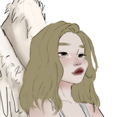
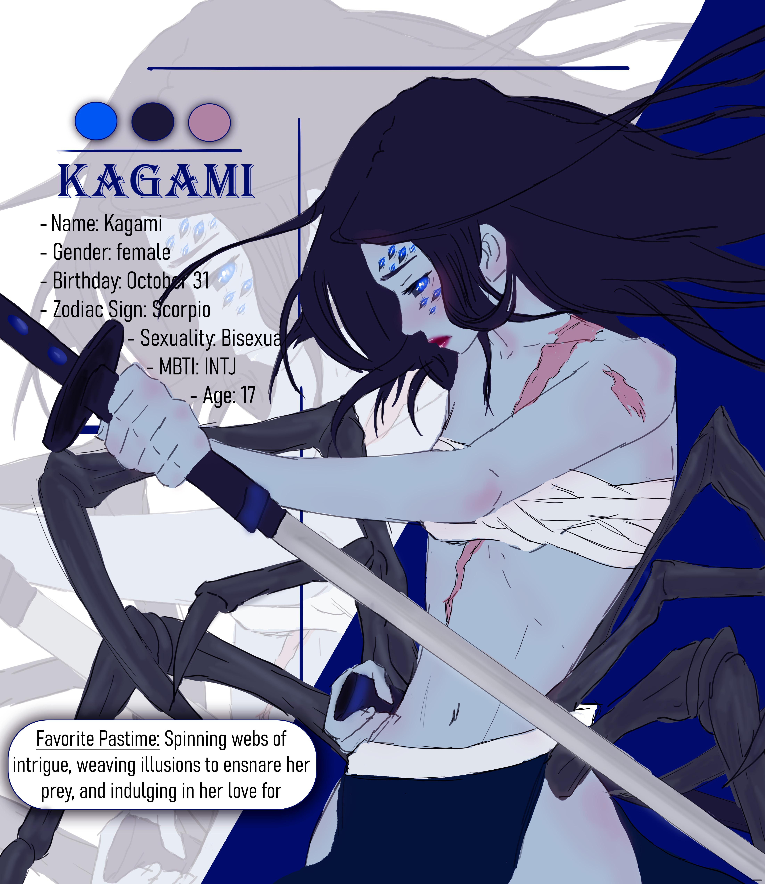
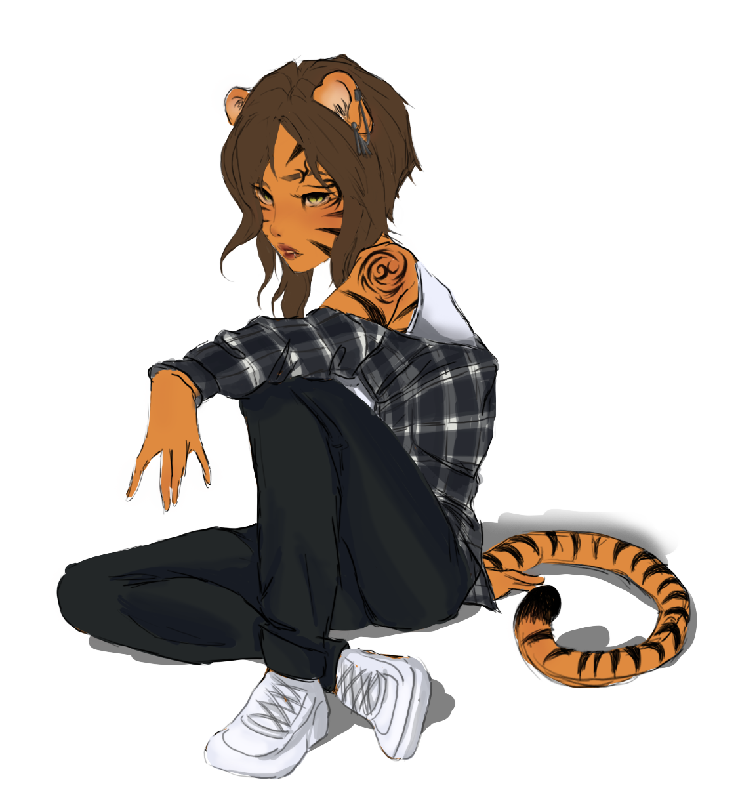

Ex-Friend

Friend
Friend & Crush
Friend
Friend

Friend

Attributes
- Age: 17
- Height: 1,69
- Specie: Tiger
- Birthday: March 3
- Gender: non-binary
- Sexuality: Pansexual
- MTBI: ISTP
- Zodiac: Pisces
Backstory
Raised in slavery, bought free by Directprom. Has trust issues with other beings. But now an angel, Sabrina, is showing her everything and trying to befriend her.